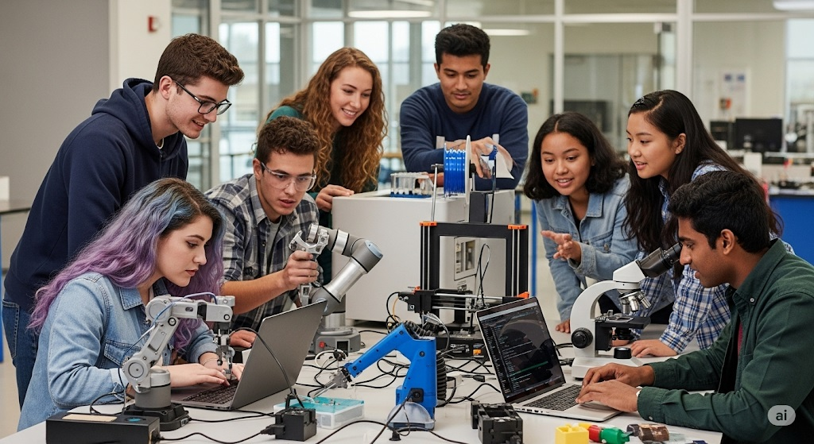
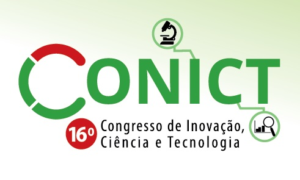
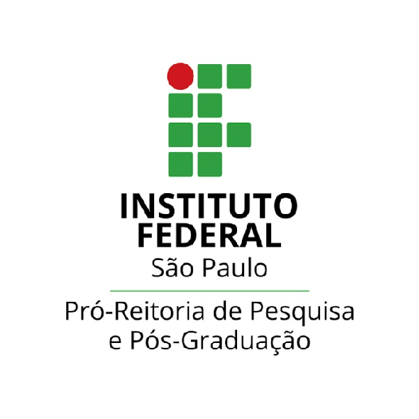
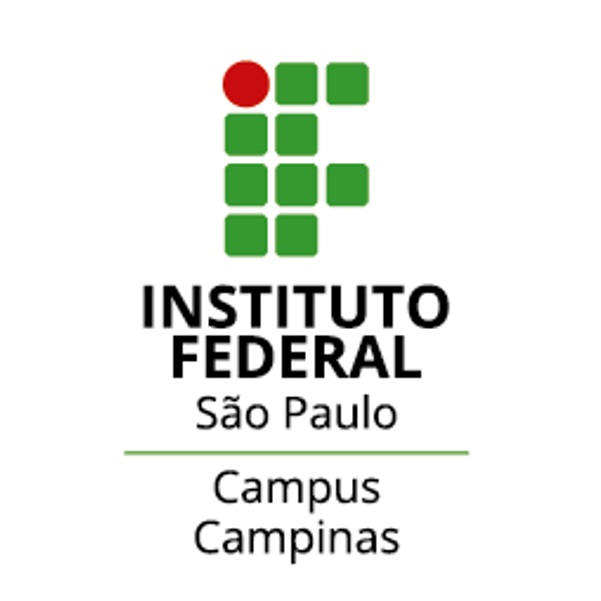

Bem-vindo ao 16º CONICT!
Congresso de Inovação, Ciência e Tecnologia do IFSP
25 a 27 de Novembro de 2025 | IFSP Câmpus Campinas
Sobre o CONICT

Um Evento Multidisciplinar de Ciência e Tecnologia
O Conict é um evento anual, científico e tecnológico, de natureza multidisciplinar, que integra as principais áreas de conhecimento, contando com a participação da comunidade interna e externa do IFSP.
Promove a difusão da produção científica e tecnológica por meio de apresentações orais e/ou pôsteres de trabalhos, cujos respectivos resumos expandidos são publicados em seus anais. O evento é aberto à participação de estudantes do ensino médio, técnico ou superior que desenvolvam pesquisa no IFSP ou em outras instituições de ensino e/ou pesquisa do país.
Além disso, o evento tem como objetivo divulgar à comunidade os resultados das pesquisas desenvolvidas, aproximando os pesquisadores dos setores produtivos.
Ao longo de suas 15 edições, o evento vem apresentando um crescimento considerável do número de participantes e, consequentemente, do número de trabalhos apresentados. O Conict, nesses 15 anos, soma mais de 5.000 trabalhos apresentados, além de diversas palestras e minicursos ministrados.
Neste ano, o 16º Congresso de Inovação, Ciência e Tecnologia do IFSP acontecerá de 25/11/2025 a 27/11/2025 no IFSP Câmpus Campinas.
Acesse a plataforma de submissão e participe!
Chamada de Trabalhos
Participe ativamente do 16º CONICT submetendo seu trabalho. Confira as datas importantes e as diretrizes.
Datas Importantes
- Prazo de submissão: 05 de agosto de 2025
- Divulgação dos resultados: 30 de setembro de 2025
- Prazo de envio da versão final: 14 de outubro de 2025
- Data do congresso: 25 a 27 de novembro de 2025
Como Submeter
As submissões devem ser feitas utilizando o Modelo de submissão (Word e Latex) no formato de resumo expandido (até 6 páginas, sem identificação).
Os trabalhos devem ser submetidos exclusivamente em PDF através do site de submissão.
É necessário realizar cadastro como autor. Acesse o tutorial para cadastro e submissão.
Lembre-se de incluir a seção de Contribuição dos Autores (Taxonomia CRediT).
Pronto para Submeter?
Não perca o prazo! A submissão é feita exclusivamente pela plataforma oficial do evento. Clique no botão abaixo para acessar.
Verifique todos os dados dos autores durante a submissão para garantir a correção dos certificados e publicações.
Programação
A programação completa do 16º CONICT, incluindo palestras, minicursos e sessões de apresentação, será divulgada em breve. Fique atento!
Aguarde a divulgação da programação oficial.
Comissão Organizadora
Conheça os responsáveis pela organização do 16º CONICT.

Instituto Federal de São Paulo
Pró-reitoria de Pesquisa e Pós-graduaçãoResponsável pela coordenação geral do evento.

Instituto Federal de São Paulo
Câmpus CampinasSede e co-organizador da 16ª edição do CONICT.
Contato
Tem alguma dúvida? Entre em contato conosco ou venha nos visitar!
Local do Evento
IFSP Câmpus Campinas
Av. Heitor Penteado, s/n - Jardim Nossa Sra. Auxiliadora, Campinas - SP, 13075-460
conict@ifsp.edu.br